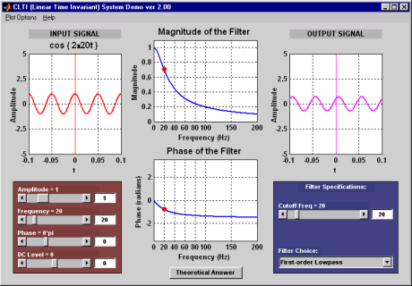

|  |
The Continuous time LTI Demo is a program that helps visualize the process of continuous-time filtering through frequency response. Features:
- Users can choose from a variety of different filters and sinusoidal inputs.
- The input and output signals as well as the frequency response of the filter
are displayed simultaneously.
- The mathematical result is hidden until the student wishes to reveal it by
pressing the Theoretical Answer button.
- Various plot options enable the tool to be effectively used as a lecture aid
in a classroom environment.
|